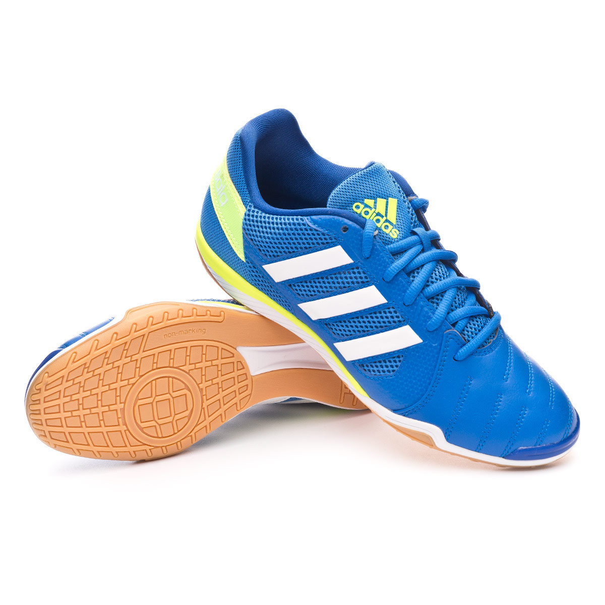

Adidas Top Sala |
Información:Fabricado con un novedoso material fruto de la combinación de material sintético para una gran resistencia al desgaste, y piel sintética para una gran flexibilidad, combinado con mesh. Ligeros cambios en la zona del talón la hacen todavía más ligera (225 gr.) Realizada con EVA pre moldeada para absorber los impactos y hacer más cómodos los apoyos. Nuevo diseño, mantiene un punto de pivotaje en la zona delantera. Fabricada con “Hi grip” para un perfecto agarre en todas las superficies. Por su diseño y los materiales con los que está fabricada la zapatilla, se recomienda su uso en pistas interiores (indoor). Precio: 59.99€ |
|---|